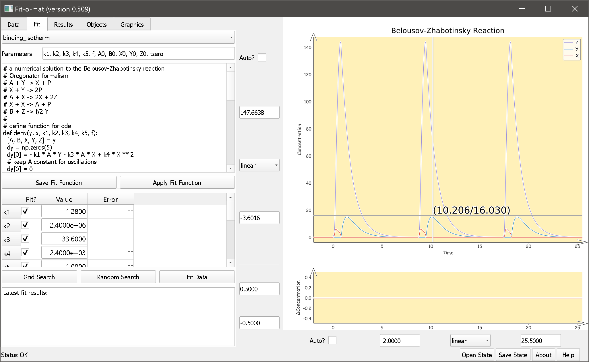

Manual
Fit-o-mat written and © by Andreas Möglich 2017-2018, Universität Bayreuth, Germany
andreasmoeglichuni-bayreuthde
General remarks
Purpose & audience
Fit-o-mat is an all-purpose, open-source, cross-platform program for non-linear least-squares data fitting. The software is written in Python 3 and resorts to the Python libraries NumPy and SciPy for numerical methods, and to matplotlib for visualization. The program is operated via a graphical user interface implemented in PyQt5. In a nutshell, Fit-o-mat provides a front-end to data-fitting algorithms implemented in Python and thereby strives to unlock their application for a broad audience, including people less versed in computer programming.
The intended target audience for Fit-o-mat is anybody interested in non-linear least-squares analysis, specifically but not limited to students, teachers and researchers in the life sciences. As a case in point, we have been using the program in the classroom and for preparing figures for publication.
Gallery
A few examples of graphics prepared with Fit-o-mat (in a matter of minutes only).
Disclaimer
The program is released under the GNU General Public License version 3.0 or later. Hence, it can be freely used and distributed as long as it is unmodified. Use at your own responsibility, the author cannot be held responsible for any data loss etc. If you encounter bugs, try to reproduce, save program state right before bug occurs (cf. below) and send to andreasmoeglichuni-bayreuthde. Feature requests may also be sent to the same address.
If you employ Fit-o-mat in a publication, please acknowledge use:
Möglich, A. (2018) An open-source, cross-platform resource for non-linear least-squares curve fitting. J Chem Educ under review
Features
Fit-o-mat attempts to meet these objectives:
- open-source, cross-platform, Python-based architecture
- free to copy, free to share, facilitate data exchange
- least-squares fitting to arbitrary target functions, including discontinuous and numerical functions
- flexible online modification of fit parameters and function
- publication-quality graphics in various formats
- tutorial mode to aid teaching
- enthuse people for Python
Installation
Fit-o-mat requires a working Python 3 installation and the following modules, all of which are pretty standard: PyQt5, sys, glob, functools, copy, ast, time, os, webbrowser, matplotlib, xlrd, xlsxwriter, numpy, scipy. To install Python 3, the following information may be helpful.
- Windows - we recommend WinPython as it already includes the above required modules
- Linux - modern Linux distributions should come with Python 3 or offer the option to install it. Similarly, missing modules can be installed as well.
- Mac OS X - Fit-o-mat principally runs on Mac OS X but the installation of PyQt5 is challenging. People have had success with Homebrew. (Sorry, don't possess a current Mac, can only provide minimal support here.)
The actual Fit-o-mat program is a Python script named fit-o-mat.py. Copy this script as well as the accompanying file folders to a desired directory. Run the Python program. (Under Linux/OS X, the script assumes that the Python 3 interpreter is located at /usr/bin/python3.) If installation has been successful, a program window should now appear that depending upon operating system looks approximately like this.

Tutorials
How to learn using Fit-o-mat? One option certainly is to go through this manual but arguably the best way to learn using (and liking) Fit-o-mat is to actually try it out. In this spirit, Fit-o-mat comes with several tutorial files that can be executed via the 'Open State' button located in the bottom right corner of the program window.
Credits
Kudos to my research group at Universität Bayreuth for patience, comments, inspiration, testing, beta-testing and (rather painful) alpha-testing. Thanks to my old pals Max2, Marvin, Falko et al. at Humboldt-Universität zu Berlin for hooking me up with Python (used to be a camelid before). Thanks to Nischal Karki and Vincent Emann, and Drs. Christian Kambach, David Richter, Dagmar Wachten, Michael Weyand, and Brian Zoltowski for stimulating discussion and motivation.
Feature reference
Main window
The program window is divided into two halves, with the left showing one of five tabs and the right displaying main and residuals plots. The usage of the five tabs is detailed below. The right part of the window allows to set limits and scale (linear or log) for the x any y axes; the checkboxes turn on/off automatic zoom to current data/curve during program usage. Left-click in the main graph area allows interactive zoom to desired regions of the plot; right button unzooms to previous view. Middle button (or, left double-click) toggles on/off a mouse cursor.
The very bottom of the program window contains a status bar that displays messages in case of problems during program usage. Watch this space to become aware of (and hopefully solve) any problems. At the right edge of the status bar, buttons are available for saving and loading the current state (or, session) of the program.
Data tab
The purpose of this tab is to import data, and to optionally reduce and transform them.
- Open file - data files in Excel and text format (tab- or comma-delimited) are supported. Once a file has been loaded, the below table is populated. In case of Excel files with several sheets, a pertinent selector dialog is displayed. Data rows in the table can be selected by mouse or keyboard. Cells can be edited by double-clicking on them or just typing new contents. By clicking on the table header, the role of a given data column can be specified, i.e. none, x and y values and errors, or data labels.
- Replace comma - Certain countries use the comma character (,) to delimit decimal numbers but Fit-o-mat expects decimal numbers with a period delimiter (.). Use this button, to replace all commata in data table with periods.
- Transpose? - Check this box to transpose data sheet, i.e. swap columns and rows.
- Error options - Choose between using no errors, individual data errors in specified column (or, none if column is not assigned), constant error and proportional error.
- Data reduction - Data can be reduced by skipping or averaging n data points. The option 'mvavg' calculates a moving average over n consecutive data points, and the option 'log' logarithmically reduces number of data points to target number (approximately).
- Data transform - Formulas can be entered to transform the x and y values. For example, entering 'x = y' and 'y = x' swaps x and y. Likewise, 'x = x + 5' shifts data in x by 5.
- Import data - The currently selected data rows are imported with the current settings for error, data reduction and transform. When applying the reduction and transformation steps, data errors will be propagated.
- Import data series - This function iteratively imports data sets starting with the currently selected y column and then continuing for all (unassigned) columns to the right of this initial column. To speed up graphics, display of data is switched to line graphics with no markers. Other than that, the comments for the 'Import data' function apply.
Fit tab
The purpose of this tab is to fit the data.
- Function selector - The top-most drop-down menu allows to select fitting functions. These are actual text files that (by default) reside in the 'functions' subdirectory. Once a fit function has been selected, the parameter and formula fields and the parameter table are updated, and the new function is plotted over the current x interval.
- Parameter field - Use this field to specify which parameters the fit formula is using. Note that the independent variable is always assumed to be 'x' and the return variable is always assumed to be 'y'. Hence, 'x' and 'y' need not be specified here.
- Formula field - This field contains the current fit formula which can be edited at will. The entry field turns red if a fit function throws an error when it is plotted.
- Save fit function - The current fit formula and parameter values can be saved to file.
- Apply fit function - Use this button to apply a previously edited fit function. If a fit function has been chosen via the drop-down selector, it has been applied already and this button need not be clicked.
- Parameter table - Use checkboxes to restrain parameters to set values or to optimize them during fit. Entry fields hold current parameter values. Final column shows asymptotic standard errors from last fit.
- Grid search - Starting from the current set of parameters, Fit-o-mat tries to find better agreement between data and fit by systematic variation of parameters in a grid-like fashion. A progress window pops up that provides information on the process and allows to terminate the procedure. Note that this function does not perform an actual fit of the data, but rather it is ideally used to determine suitable start parameters for a subsequent least-squares fit.
- Random search - Starting from the current set of parameters, Fit-o-mat tries to find better agreement between data and fit by random variation of parameters. A progress window pops up that provides information on the process and allows to terminate the procedure. Note that this function does not perform an actual fit of the data, but rather it is ideally used to determine suitable start parameters for a subsequent least-squares fit.
- Fit data - Non-linear least squares optimization is performed for the currently selected data sets and curves, cf. Objects tab. Fitted parameters are updated in the parameter table as are curve and residuals in the plot. If start parameters are ill-chosen, the fit may not converge to the global minimum but be trapped in a local minimum. If so, try adjusting start parameters, either manually or by using the 'Grid search' or 'Random search' options, and fit again.
- Fit results - The bottom text field displays information on the last fit.
Results tab
This tab lists the current data and fit function values.
- Main table - Once data has been imported, a table with the data and error values is displayed. After fitting, columns with the fitted function values and residuals are added.
- Export results - The content of the data table and the current graph can be exported as an HTML file with embedded SVG. Use this function to document your work. Alternatively, export these data to Excel (if you must).
Objects tab
This tab grants access to the organization and the appearance of data, curve and residuals objects.
- Data sets - Each line in the table represents one data set. Use checkbox to control visibility, radiobutton to set active data set and the two entry fields to control z order and name of the data set. Note that curves are always fitted to the currently active data set. The 'Conf' button opens a pop-up menu that allows to alter the appearance of the data set. 'Copy' creates an identical copy of the data set, and 'Del' deletes the data set (unless it is the last remaining data set).
- Curves - Each line in the table represents one curve. Use checkbox to control visibility, radiobutton to set active curve and the two entry fields to control z order and name of the curve. Note that the currently active curve is used for fitting; for plotting, the curve is evaluated over the currently set x range. The 'Conf' button opens a pop-up menu that allows to alter the appearance of the curve. 'Copy' creates an identical copy of the curve, and 'Del' deletes the curve (unless it is the last remaining curve).
- Extras - You can add lines, text labels or annotations to the plot. Resultant objects will then appear as entries in the table. Use checkbox to control visibility and the two entry fields to control z order and name of the object. The 'Conf' button opens a pop-up menu that allows to alter the appearance of the object. 'Copy' creates an identical copy of the object, and 'Del' deletes the object.
- Residuals - Each line in the table represents one residuals object, with the first line being the zero line in the residuals plot. Use checkbox to control visibility, and the two entry fields to control z order and name of the residuals. Note that the currently active residuals object is paired to the currently active data set. The 'Conf' button opens a pop-up menu that allows to alter the appearance of the residuals.
Graphics tab
This tab is used to adjust and export graphics. It's arguably easier to try out and see what these settings are doing than reading the below, but just in case, here we go:
- x and y labels - Set text, color, size and font of axes labels. Use second row to control angle, horizontal alignment and position along axis of label.
- Axes - Control visibility, color, width and line style of axes.
- Arrows - Draw arrowheads for x and y axes. Set colors, length and width of arrowheads. The settings 'ind.' and 'off.' control the shape and the offset of the arrowhead, respectively.
- Tick labels - Control position of axes ticks. Use 'auto' to automatically assign them, or the text box to manually determine where and which labels are displayed. The x axis also has the additional option 'Use labels' to show custom labels contained in the current data set (if any). Also, control angle, size, color and font of tick labels.
- Ticks - Control visibility, position, color, width and length of tick marks.
- Grid - Control visibility, color, width and line style of x and y grid. Also, determine whether grid is shown in front or behind data.
- Legend - Control visibility, placement, face and edge color, border width and shadow of legend. Configure color, size and font of legend entries.
- Figure - The first line sets figure and canvas color. The second line sets the width and height of exported graphics (in inches). The button 'Use screen' updates the entry fields with the dimensions currently seen on screen. The third row controls the padding around the graph; use these settings if graphics are cut off in exported files.
- Miscellaneous graphics settings - Draw your graphics in xkcd style (works great in the class room). Draw an outline and/or shadow for your data and curves.
- Preview - Display a preview of the current plot as it looks when exported.
- Export graphics - Save the current plot and residuals graphics in PDF, SVG and PS vector formats, or as a PNG bitmap. Advanced users may save the current graphics as a Python script that generates these graphics (useful for further modification of plot graphics).
- Open style - Apply style settings to the current plot.
- Save style - Save current graphics settings as a style. Generate and share your own style files.